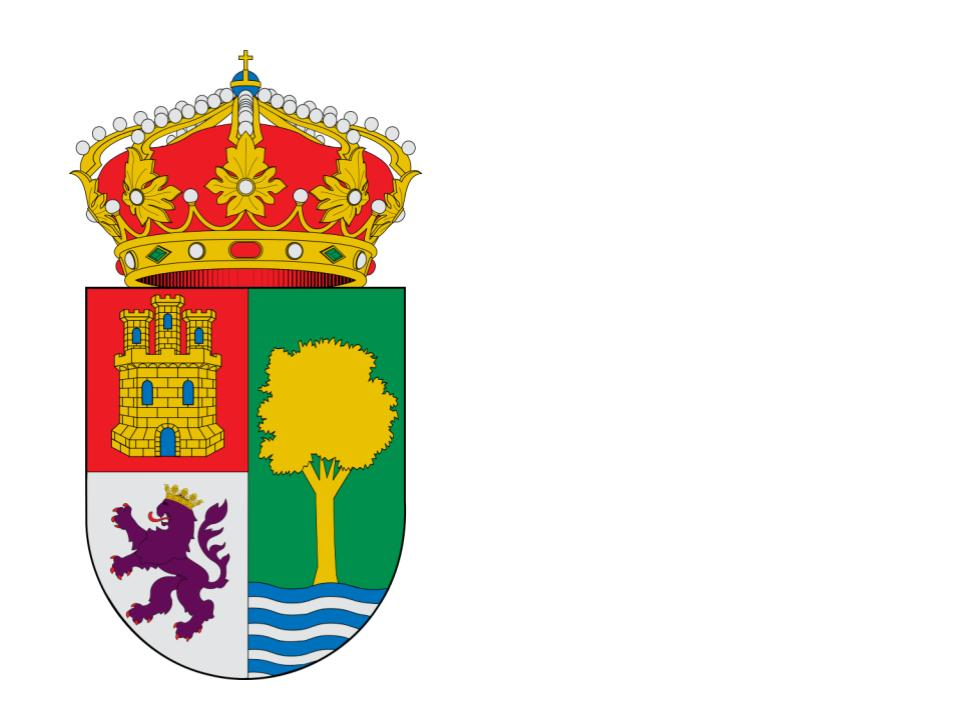

Descubre el Colegio Ruta de la Plata en Santa Olalla del Cala. Una cooperativa comprometida con el desarrollo integral y el aprendizaje competencial de tus hijos en un ambiente acogedor.
Mantente al día con las últimas actividades, proyectos e informaciones de nuestra comunidad escolar.
Un centro gestionado por docentes comprometidos bajo la cooperativa Ruta De La Plata S C And Scoop.
El Colegio Ruta de la Plata basa su modelo pedagógico en el aprendizaje dialógico y la mediación escolar como herramientas fundamentales para el desarrollo integral del alumnado. Creemos en una enseñanza competencial que prepare para la vida real, partiendo del respeto y la tolerancia.
Ante cualquier conflicto, fomentamos que sean los propios alumnos quienes, guiados por sus tutores, resuelvan sus diferencias a través del diálogo y pacten soluciones. Este enfoque alternativo al modelo meramente punitivo promueve la autorregulación y el carácter.
«Debemos potenciar un aprendizaje dialógico que impulse en todos los miembros de la comunidad educativa el diálogo y la mediación como principal herramienta ante los conflictos.»
Contamos con un sólido Equipo de Orientación Escolar (EOE) y especialistas en Pedagogía Terapéutica y Audición y Lenguaje para asegurar la plena inclusión de todo nuestro alumnado.
Acompañamos a nuestros alumnos en sus etapas más importantes de crecimiento intelectual y social.
Dirigido a niños y niñas de 3 a 5 años, enfocándonos en el desarrollo de la autonomía, hábitos básicos y psicomotricidad en un ambiente lúdico y afectivo.
Para alumnos de 6 a 12 años. Nos centramos en el desarrollo de las competencias clave, la comprensión lectora, el razonamiento lógico-matemático y los valores sociales.
Únete a nuestra familia. Sigue estos sencillos pasos para el proceso de escolarización de tu hijo.
Completa el formulario inferior o ponte en contacto directo con nuestra secretaría para coordinar una cita personalizada.
Visita nuestras instalaciones y conoce de primera mano el Proyecto Educativo y a nuestro equipo docente.
Presentación de la documentación del proceso de escolarización ordinaria (del 1 al 31 de marzo de cada año escolar).
Cumplimentación de la matrícula final en los plazos fijados por la Junta de Andalucía (del 1 al 10 de junio).
Facilitamos la conciliación familiar y enriquecemos la vida del alumno dentro y fuera del aula.
Servicio escolar complementario para recibir a los niños antes del inicio de las clases. Contamos con monitoras cualificadas y un registro de asistencia estructurado. Se desarrollan actividades lúdicas tranquilas de preparación para la jornada escolar.
Servicio de almuerzo escolar que fomenta la adquisición de hábitos de alimentación saludables y de convivencia social durante la comida. Los menús están adaptados a intolerancias y alergias.
Programa para la Innovación Educativa centrado en hábitos de vida saludable, fomento del deporte escolar y la prevención en salud. Incluye proyectos en colaboración con el Centro de Salud local (como la campaña de donación de sangre) y actividades intergeneracionales con la Residencia de Mayores.
Estamos a tu disposición. Comunícate con la dirección o accede a los portales oficiales del colegio.
Puedes contactarnos por cualquiera de los siguientes medios oficiales o visitarnos en nuestras dependencias:
C/ Velázquez s/n - 21260 - Santa Olalla del Cala - Huelva

959 19 03 57
648 76 28 32
Si eres miembro de la comunidad educativa (padre, madre o docente), puedes acceder directamente a la intranet oficial de la Consejería de Educación a través de la aplicación iPasen o en el panel administrativo del centro.